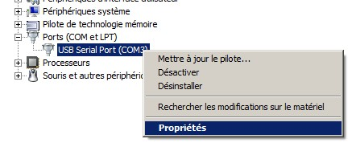
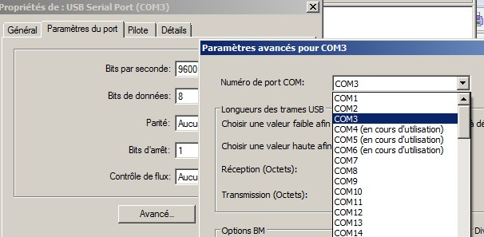
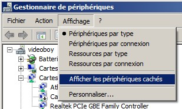

On a machine that often uses different hardware peripherals, sometimes there are problems with the automatic assignment of Com Ports.
We're talking about the detection of hardware that uses serial communication like:
Windows will assign a fixed COM port.
The numbering of these COM ports starts at 3 (included), 1 and 2 are reserved for the modem. The problem is that if we exceed the limit of 10 com ports, which is a real limit for some software like White Cat or some hardware like Jeenode, then the device will no longer be accessible.
Arduino IDE under COM ports will appear, while only the arduino is connected. These COM ports are assigned permanently so it can be traces from some previous installation.
There are a couple of ways to deal with this.
This is the solution to use in an emergency:


Note that in this screenshot, I have used 3 ports, 4 and 5 are assigned to other devices that are not plugged into the machine (DMX card and UNO). They are listed as being in use even though they are not connected: this is the problem with the allocation of fixed windows.
In the Device Manager window, click on the View menu and pick “Show hidden devices”

For XP, follow this procedure for displaying the hidden devices: http://support.microsoft.com/kb/315539